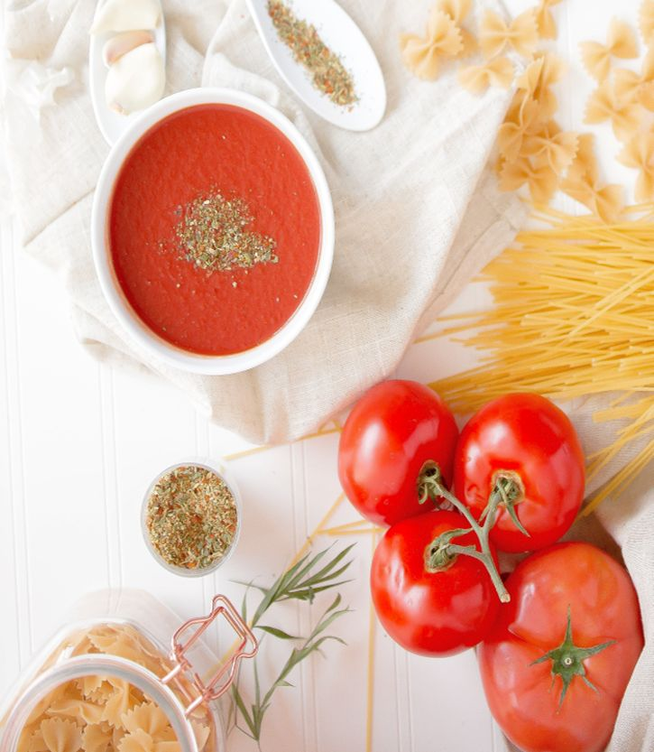

Sauce

Description
This homemade red sauce is great for pasta and meatballs. If you are only used to store bought jarred sauce you will notice a huge difference in quality and taste!
Ingredients
- 4 garlic cloves
- 1 onion
- 3 cans crushed tomatoes
- 1 can tomato paste
- Salt, pepper, oregano, basil, parsley, bay leaves
Steps
- Saute garlic and onion until transparent
- Mix in crushed tomatoes and paste
- Add spices
- Simmer on low/medium heat for 20 minutes